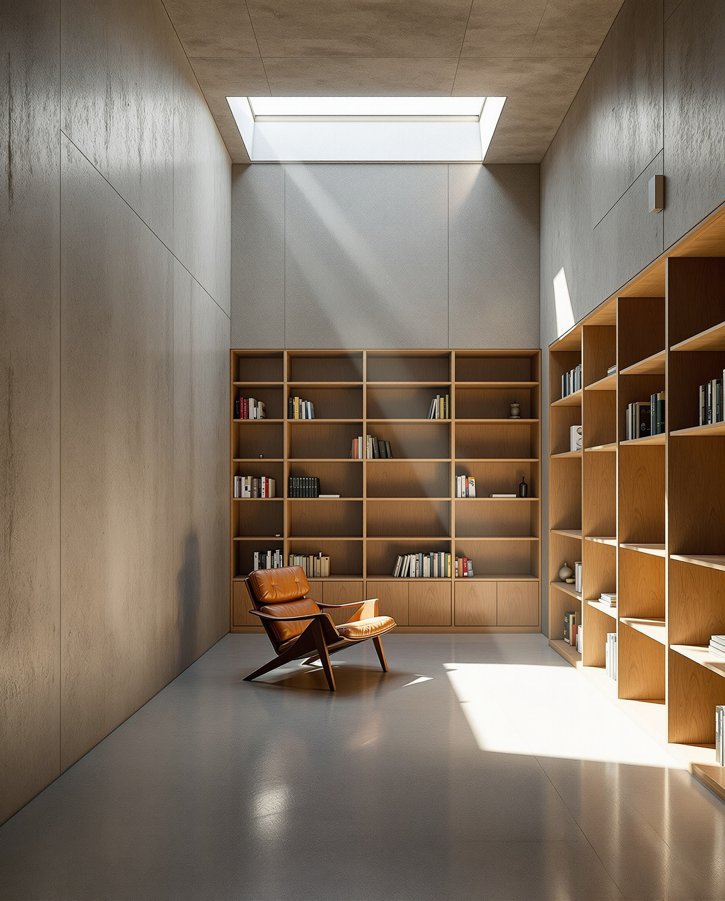

The pitch on every sketch-to-photoreal tool is the same. Hand the AI a marker sketch and get back a photorealistic frame, in seconds, ready for a client conversation. The pitch glosses over the only question that matters for a working architect, which is whether the photoreal output actually reflects the drawing you handed in. If it doesn't, the tool isn't sketch-to-photoreal. It is prompt-to-photoreal with a sketch-shaped piece of decoration on the side.
To find out which tools belong in which bucket, we picked three sketches from a current SD package. A residential addition front elevation, drawn in marker over a printed site photo. A mixed-use courtyard interior, drawn in pen on a yellow trace overlay. A small civic pavilion concept, drawn in graphite on letter paper, with the figure and a tree blocked in roughly for scale. Three different drawing styles, three different scenes, three real working documents from a real project. We pushed each sketch through five tools at comparable quality tiers and compared output to source.
The five tools, and how each one accepts a sketch
Before talking about quality, it matters how each tool ingests a hand drawing, because that constrains the upper limit of what it can do.
mnml.ai takes a sketch upload through its web app or SketchUp plugin and routes it into a sketch-to-photoreal pipeline that is functionally a tuned ControlNet workflow with style presets layered on. You can pick a target style (Editorial, Daylight, Hand-drawn refinement) and add an optional text prompt. The drawing constrains geometry. The prompt constrains material and atmosphere. You get back a frame in 60 to 90 seconds.
ArchiVinci AI accepts sketches through the same upload box as model viewports. Style presets are residential-leaning (Modern, Scandinavian, Mediterranean, Editorial) and the text prompt window is smaller than on mnml.ai. Returns a frame in 45 to 75 seconds.
Veras can take a sketch input, but its primary input mode is a 3D model viewport from Revit, SketchUp, Rhino, or ArchiCAD. The sketch path works by uploading the drawing as a reference image and adjusting the style strength. It is not the workflow Veras was built for. You can feel that in the output.
ComfyUI with ControlNet is the local-rig option. A properly tuned graph using Stable Diffusion XL or a Flux-class model, with ControlNet conditioning on a depth or canny preprocessor of the sketch, produces the most geometry-faithful output of any tool we tested. Setup cost is hours. Runtime per frame on a 4090-class GPU is under 30 seconds.
Krea AI is the generalist image tool that creative directors keep recommending to architects who don't want to learn ComfyUI. It accepts sketches as image references with adjustable influence, supports a wide range of style targets, and turns out painterly or photoreal outputs in 20 to 40 seconds. Sketch fidelity depends entirely on how high you push the reference influence.
The residential addition, where mnml.ai and ComfyUI both held the line
The residential sketch was the easiest test. Marker over a site photo, with the addition drawn in cleanly and the existing house showing through as a faded reference. Clear roof pitch, clear window placement, clear material implication on the addition (board and batten on the new volume, lap on the existing house).
mnml.ai's output preserved every line that mattered. The shed roof pitch read correctly. The clerestory band landed in the right vertical position. The material assumption (board and batten on the new, lap on the existing) matched the sketch implication without being prompted. First-pass output was client-ready with one reprompt to clean up a window mullion pattern.
ComfyUI with canny ControlNet at 0.85 strength produced the tightest geometry match in the test. The marker linework survived almost completely into the final frame. The material choices were less editorial than mnml.ai's defaults, but the level of geometry control was unmatched.
ArchiVinci's output preserved the basic massing but smoothed the clerestory into a continuous glass band, which is the same residential bias we noted in our standalone ArchiVinci review. Veras held the existing house geometry well but introduced a hipped roof on the addition that wasn't in the drawing. Krea, set at high reference influence, produced a stylish but loose interpretation that read the volumes correctly but missed the roof pitch by an obvious margin.
If you cannot tell, from looking at the AI output, that the sketch was about a shed roof and not a hipped roof, the tool failed.
The mixed-use courtyard interior, where the field collapses
The interior sketch was harder. Pen on yellow trace, with a courtyard glazing pattern, two seating zones, a planter wall, and rough furniture blocks. The kind of drawing a project architect sketches over a model export at the desk in 15 minutes.
This is where most tools fell apart. mnml.ai held the glazing pattern but invented furniture that wasn't in the sketch. Veras produced a beautiful interior that bore almost no relation to the drawing, because Veras is trained to interpret 3D models, not pen-on-trace abstraction. Krea produced an editorial interior that respected one of the seating zones and ignored the other. ArchiVinci substituted a generic restaurant interior over the courtyard moment and added a fireplace.
ComfyUI was the only tool that held the entire sketch. With ControlNet running on a depth-from-canny preprocessor at 0.9 strength, the glazing pattern, both seating zones, the planter, and even the rough furniture blocks survived into the final frame. The output was less polished than Veras or Krea, but it was the drawing.
The lesson on interior sketches is that tools without strong control conditioning are guessing. They guess well when the scene is familiar and poorly when the scene is specific. A working studio that needs interiors to reflect actual design intent should either build a ComfyUI rig or accept that current commercial cloud tools are giving them photoreal mood, not photoreal documentation.
The civic pavilion concept, where ambition broke everything
The third sketch was the hardest. Graphite on letter paper, civic pavilion concept, geometry mostly suggested rather than locked, scale figure and a tree present, no material specification at all. The kind of drawing a designer puts in front of a client to test a direction, not to confirm one.
Every cloud tool struggled. mnml.ai produced a credible building in the right family but invented a material palette and altered the roof line. ArchiVinci picked a "Modern" preset and produced a generic glass box that ignored the drawing's pavilion language. Veras refused to commit to a roof line and produced a hedged geometry that read as neither the sketch nor a credible alternative. Krea produced something gorgeous and unrelated.
ComfyUI was again the only tool that respected the source, but it also revealed the limit of ControlNet when the source is loose. A graphite sketch with implied geometry doesn't give canny or depth preprocessors enough to grab. Output was geometry-faithful but materially blank. To produce a useful frame from a concept-level sketch, you need to invest in the prompt and the style model, not just the conditioning.
The honest read is that no current AI tool turns a true concept sketch into a usable photoreal frame without architect-level setup. The category exists for design development sketches with clear intent, not for the loose moves you make at the start of a project.
How the five tools ranked on geometry fidelity
| Test sketch | mnml.ai | ArchiVinci | Veras | ComfyUI | Krea |
|---|---|---|---|---|---|
| Residential addition (marker, clear) | Strong | Acceptable | Loose on roof | Tightest | Loose |
| Mixed-use courtyard interior (pen on trace) | Partial | Substituted scene | Beautiful, unrelated | Held the drawing | Held one zone |
| Civic pavilion concept (graphite, loose) | Right family | Generic glass box | Hedged | Faithful, blank | Gorgeous, unrelated |
| Setup time | Minutes | Minutes | Minutes | Hours | Minutes |
| Time per frame | 60-90s | 45-75s | 30-60s | Under 30s | 20-40s |
Our take, what to actually use when
For most architects in 2026, the practical sketch-to-photoreal workflow is a two-tool stack. Use mnml.ai's sketch-to-photoreal pass for clear DD-style sketches where the geometry is locked and the question is style. It is the best ratio of fidelity to setup cost on the commercial side. For sketches where the geometry is the entire point, especially interiors with specific design intent or concept frames that need to survive a client review, invest in a ComfyUI rig with ControlNet. It is the only tool we tested that consistently respects what you drew.
ArchiVinci and Krea are not bad tools. They are doing a different job. They produce attractive frames inspired by your sketch, which is the right deliverable for early creative-direction work but the wrong deliverable for design intent. Veras's sketch mode is the weakest link in an otherwise strong product, because Veras was built for 3D model inputs and sketches are not the workflow.
If you are picking one tool to buy in this category for residential and small-commercial SD work, mnml.ai. If you are picking one tool to learn for concept and interior work, ComfyUI. If you are picking one to ignore, the one with the most aggressive Instagram ad spend.
Run this test yourself this week. Pick one sketch from your current project, the one with the clearest design intent, and push it through three tools you already pay for. Look at the output next to the sketch. If you cannot tell, by looking at the render, what the drawing was trying to say, the render isn't a translation of your work. It is a generation in the neighborhood of it.
Tested by Vista Studios on a live SD-phase mixed-use scheme. No affiliate relationships. ControlNet conditioning tuned per scene. Renders generated from working project sketches, not curated test images.